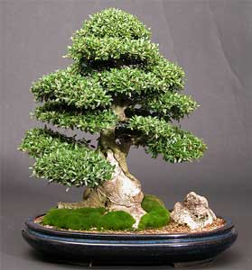

Bonsái (盆栽 bonsai?) es una palabra de origen japonés que significa literalmente bon = 'bandeja' + sai = 'cultivar' (aunque etimológicamente procede del término chino 盆栽, penzai, que significa pén = 'bandeja' + zāi = 'cultivar') y consiste en el arte de cultivar árboles y plantas, normalmente arbustos, controlando su tamaño para que permanezca de un tamaño muy inferior al natural, mediante técnicas, como el trasplante, la poda, el alambrado, el pinzado, etc., y modelando su forma para crear un estilo que nos recuerde una escena de la naturaleza. Es indisociable de la maceta, ya que el bonsái se entiende como el conjunto que conforman árbol y maceta.
El arte del bonsái se originó en China hace unos dos mil años, en donde se conoce como Penjing, como objeto de culto para los monjes taoístas. Para ellos era símbolo de eternidad, el árbol representaba un puente entre lo divino y lo humano, el cielo y la tierra.
Durante siglos la posesión y el cuidado de los bonsáis estuvo ligado a los nobles y a las personas de la alta sociedad. Según la tradición, aquellos que podían conservar un árbol en maceta tenían asegurada la eternidad. Así fue como los monjes disponían los árboles pequeños en vasijas a lo largo de las escaleras de los templos y hasta eran fuente de culto.
En el sur de China, este arte consistía en transmitir todas las características de un árbol desarrollado en la naturaleza a un árbol pequeño cultivado en maceta. Se buscaba reproducir estos árboles según los existentes en las altas montañas por lo cual utilizaban solo especies que existían en los montes y que ya poseían formas especiales en su intensa lucha contra las adversidades climáticas.
Fue llevado a Japón hace unos 800 años, donde se interpretó desde la concepción Zen de "belleza de una austera severidad", lo que llevó a los paisajes miniaturizados en maceta, nativos de China, a ser condensados en árboles únicos e ideales que representaban el universo.

Un bonsái no es una planta genéticamente empequeñecida, sino que se mantiene pequeña dándole forma, podando el tronco, las hojas y las raíces cada cierto tiempo, dependiendo de la especie. Si se cultiva adecuadamente, sobrevivirá el mismo tiempo que un árbol normal de la misma especie, pero si se hace de forma incorrecta, probablemente morirá.
En general, cualquier especie arbórea o arbustiva puede ser cultivada como bonsái, pero las más apreciadas por los aficionados son aquellas que poseen las hojas pequeñas de forma natural y además son resistentes al cultivo en maceta, como por ejemplo, las especies de los géneros: Acer (arce), Pinus (pino silvestre), Ulmus (olmo), Rhododendron (azalea), Ficus (higuera), Olea (olivo), Juniperus (enebro), Pyracantha (espino de fuego), etc.
El árbol tiene que ir en consonancia con la maceta. Así, un árbol que tenga ya mucha edad debería ir en una maceta que también tenga una presencia y porte correspondiente. Asimismo, a determinadas especies o estilos se le corresponden normalmente unos determinados tipos de macetas, como por ejemplo, una conífera irá normalmente en una maceta sin esmaltar y un arce irá en una maceta normalmente ovalada y baja, amplia y esmaltada.
Un bonsái suele exponerse en un tokonoma acompañado de un cartel (kakemono) y una planta de acento (shitakusa) o un suiseki (piedra-paisaje japonesa), aunque en este caso lo apropiado sería denominar a esta piedra como tenseki, ya que solo se trata de piedras que representan la estación del año (invierno, primavera, verano u otoño) con relación al bonsái y no necesariamente tienen las características propias de un suiseki. En el caso de árboles caducifolios se suelen exponer cuando han quedado desnudos de hojas, para que se pueda apreciar la perfección de la ramificación.
Hay que cultivarlos en el exterior durante todo el año. No obstante, en el caso de las especies tropicales y subtropicales, estos han de protegerse de las temperaturas bajas durante la época más fría, protegiéndolos en un invernadero frío muy bien iluminado. En todo caso, si no disponemos de un invernadero frío y se cultiva en el interior de casa, el bonsái debe estar lejos de fuentes de calor, junto a una ventana muy luminosa y solo durante la época fría del año (otoño/invierno).
 Articulo como cultivar
Cultivo y cuidado del bonsái
Articulo como cultivar
Cultivo y cuidado del bonsái